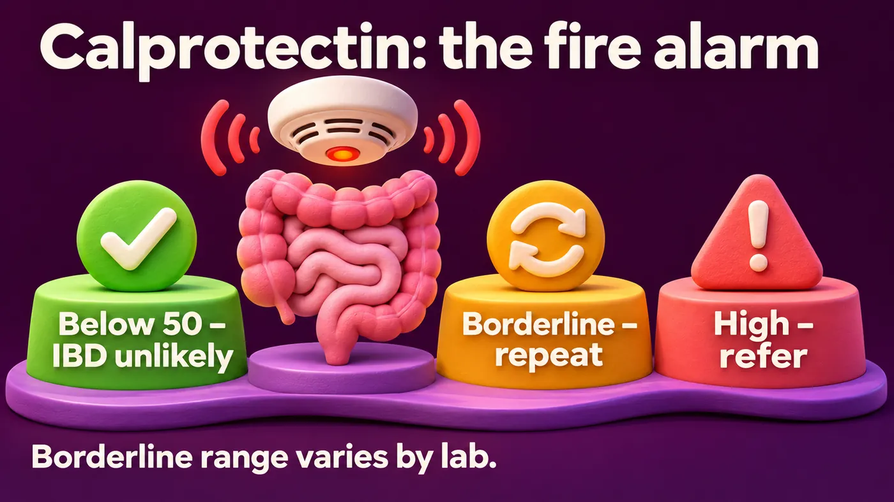
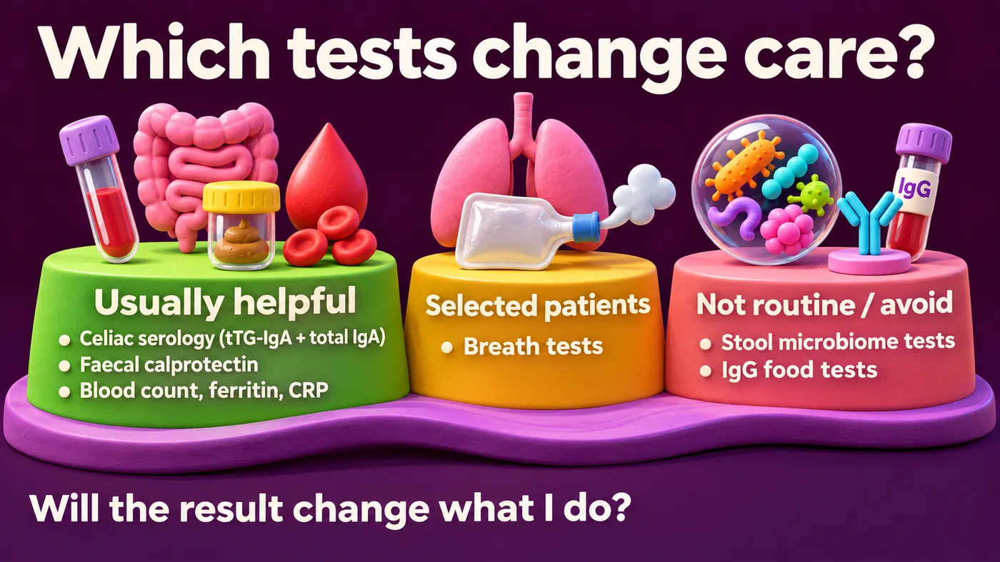

Learning objectives
After this module you should be able to:
- Choose the first tests that really change care in chronic gut symptoms.
- Order and read celiac serology correctly.
- Use faecal calprotectin to separate inflammation from functional symptoms.
- Explain why breath tests, microbiome tests and IgG food tests should not be routine.
1The golden rule
Every test should answer a clinical question. Before you order a test, ask: "Will the result change what I do?" If not, don't order it.
2Celiac disease – easy to miss, easy to test
- Celiac disease is common in Saudi Arabia. In one study of 1,167 healthy Saudi teenagers, about 1 in 45 had positive celiac blood tests (Aljebreen, World J Gastroenterol 2013 [1]).
- It can look exactly like IBS: bloating, loose stools, tiredness, low iron.
How to test (ACG 2023 [2]):
- Order tTG-IgA (tissue transglutaminase IgA antibody) together with total IgA.
- Why total IgA? Some people cannot make IgA. Their tTG-IgA will be falsely negative. If total IgA is low, an IgG-based test is used instead.
- The patient must still be eating gluten. If she already stopped gluten, the test can be falsely normal.
- In adults, a positive blood test is confirmed with an endoscopy and small-bowel (duodenal) biopsies.
3Faecal calprotectin – the fire alarm
- Calprotectin is a protein released by white blood cells (neutrophils) in the gut wall. When the bowel is inflamed, stool levels go up.
- It helps separate inflammatory bowel disease (IBD) from IBS in adults with new lower-gut symptoms, when cancer is not suspected (NICE DG11 [3]).
- A common cut-off is 50 µg/g. Below it, IBD is unlikely.
- Some pathways repeat a borderline result after about 2 weeks before referring. A clearly high result is referred straight away. The York pathway in the UK works this way, and it performed well in primary care (Turvill, Frontline Gastroenterol 2018 [4]). What counts as "borderline" differs between pathways and labs, so follow your local lab.
- Things that can raise it falsely: gut infection, NSAIDs (anti-inflammatory painkillers), and possibly PPIs.
Like a fire alarm, it tells you there may be a fire. It does not tell you where, or what kind.

4Simple blood tests still matter
A full blood count, ferritin and CRP are cheap and useful (BSG 2021 [5]). Low iron, anaemia or a raised CRP is not explained by IBS. It needs a cause.
5Tests to use only in selected patients
- Breath tests (hydrogen and methane) are used for suspected small intestinal bacterial overgrowth (SIBO) or sugar intolerance. They are best kept for patients with risk factors, such as past gut surgery or slow gut movement, not for everyone with bloating (ACG 2020 [6]). SIBO is covered in depth elsewhere.
- Stool microbiome tests: not enough evidence for routine clinical use (Porcari, Lancet Gastroenterol Hepatol 2025 [7]). You met this in Module 1.
6Tests to avoid
- IgG food "intolerance" tests. IgG to foods is a normal response to eating them. It does not show intolerance. BSG 2021 [5] advises against IgG-based elimination diets in IBS. They can lead to long, needless restriction.

7Back to Layan
Her first results:
- tTG-IgA normal, with normal total IgA. She was eating gluten.
- Faecal calprotectin 420 µg/g.
- CRP raised. Haemoglobin 10.8 g/dL with low ferritin.
Predict first. What is the best next step?
- A. Start a low-FODMAP diet and recheck in 3 months.
- B. Start a multi-strain probiotic.
- C. Order a stool microbiome test.
- D. Urgent referral to gastroenterology for colonoscopy.
Celiac disease is unlikely. But high calprotectin, raised CRP and anaemia point to inflammation. Diet changes must not delay the work-up. We find out what Layan has in Module 4.
8Test yourself
Choose an answer to see the explanation. Nothing is recorded.
1. Which pair should you order to screen for celiac disease?
Total IgA checks for IgA deficiency, which gives false negatives.
2. A patient on a gluten-free diet has a normal tTG-IgA. What does this mean?
Serology must be done while eating gluten.
3. Faecal calprotectin is 35 µg/g in a young adult with typical IBS symptoms and no alarm features. What does this suggest?
Below 50 µg/g, IBD is unlikely in this setting.
4. Which can falsely raise faecal calprotectin?
NSAIDs and gut infections can raise it. Check before you refer.
5. A patient asks for an IgG food intolerance test. What do you tell her?
BSG 2021 advises against IgG-based elimination diets.
9Take-home message
Choose tests that answer a question. Celiac serology and calprotectin often change care. IgG food tests and microbiome tests do not. Diagnose first. Then treat the gut.
10Summary
- Ask first: will this result change what I do?
- Celiac: tTG-IgA plus total IgA, while eating gluten. Biopsy confirms in adults. About 1 in 45 Saudi teenagers tested positive in one study.
- Calprotectin: below 50 µg/g, IBD unlikely. Borderline values are often repeated after about 2 weeks; follow local cut-offs. NSAIDs and infection can raise it.
- Blood count, ferritin and CRP: abnormal results need a cause.
- Breath tests: selected patients only. Microbiome tests: not routine. IgG food tests: avoid.
References
- Aljebreen AM, et al. Seroprevalence of celiac disease among healthy adolescents in Saudi Arabia. World J Gastroenterol 2013;19(15):2374–8. doi:10.3748/wjg.v19.i15.2374
- Rubio-Tapia A, et al. American College of Gastroenterology Guidelines Update: Diagnosis and Management of Celiac Disease. Am J Gastroenterol 2023;118(1):59–76. doi:10.14309/ajg.0000000000002075
- National Institute for Health and Care Excellence. Faecal calprotectin diagnostic tests for inflammatory diseases of the bowel. Diagnostics guidance DG11, 2013. https://www.nice.org.uk/guidance/dg11
- Turvill J, et al. Evaluation of the clinical and cost-effectiveness of the York Faecal Calprotectin Care Pathway. Frontline Gastroenterol 2018;9(4):285–94. doi:10.1136/flgastro-2018-100962
- Vasant DH, et al. British Society of Gastroenterology guidelines on the management of irritable bowel syndrome. Gut 2021;70(7):1214–40. doi:10.1136/gutjnl-2021-324598
- Pimentel M, et al. ACG Clinical Guideline: Small Intestinal Bacterial Overgrowth. Am J Gastroenterol 2020;115(2):165–78. doi:10.14309/ajg.0000000000000501
- Porcari S, et al. International consensus statement on microbiome testing in clinical practice. Lancet Gastroenterol Hepatol 2025;10(2):154–67. doi:10.1016/S2468-1253(24)00311-X
How to cite this module
Desoky M. Tests that help, and tests that don't. Metabolic Liver Academy, version 1.0. Updated 2026-11-10. Available from: https://metabolicliveracademy.org/modules/gi-tests.html
For education only. This module summarises published evidence and guidelines; it does not replace clinical judgement, full guidelines or local drug labels. It is not accredited for CME credit. Disclaimer.